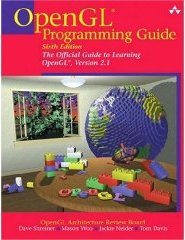

OpenGL Programming Guide, 6th ed.

Written by none other than the OpenGL architecture review board themselves, this is the de facto starting point for anyone learning how to write programs to draw computer graphics using the OpenGL graphics API. As such, the entire breadth of OpenGL is described in these 800 weighty pages.
This comes with one or two questionable implications. Firstly, the authors, being the authoritative source, are obliged to cover the entirety of the OpenGL interface, even though portions of it are now obsolete, having been supplanted in practice by newer techniques. The older methods are still present, and are described here on an equal footing with the later additions.
Similarly, to avoid getting embroiled in the idiosyncrasies of any particular vendor's implementation of OpenGL, there is never more than an occasional vague allusion to the potential performance implications of using one approach over another. The concept of using vertex arrays is covered in a general-principles sort of way, as are vertex buffer objects, with the admonition to "prefer them over explicit calls to glVertex() for performance" buried in an appendix-like chapter near the end. The idea that rendering primitives of GL_TRIANGLES is heavily optimised on modern graphics cards receives no mention, from which I mistakenly inferred that other primitive types such as GL_TRIANGLE_STRIPs, with their lower apparent vertex counts, are a preferable alternative.
This egalitarian presentation means that the book can rightly claim to be an unbiased description of OpenGL the interface, and is lent a long-term relevance by giving no bias towards any particular vendor, nor being subject to the fashions of rendering techniques that sweep through the industry every few years. On the other hand, it also means that the book is considerably larger than most people learning OpenGL will need, and fails to cover many of the vastly performance-enhancing techniques that have become standard throughout the industry.
Rating: 6/10.
I bought the 'Orange' Shader Language book next. Can anyone recommend one of the other OpenGL books that are out there? Since they are all 800 pages I'd rather not wade through them all to find the best one.